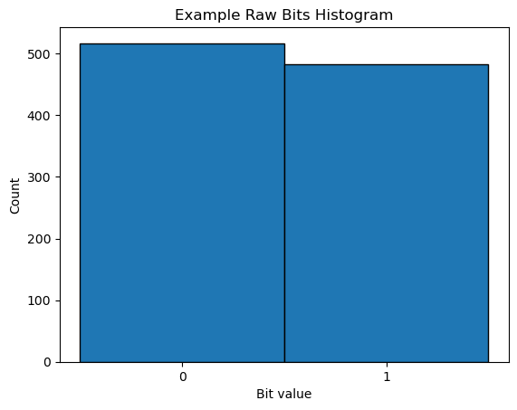
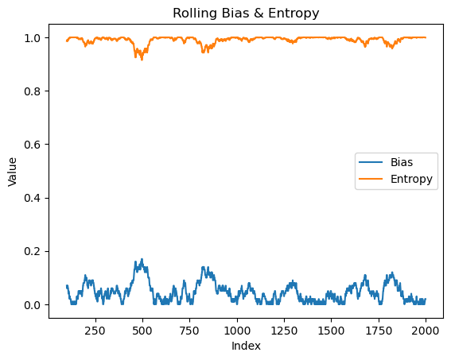
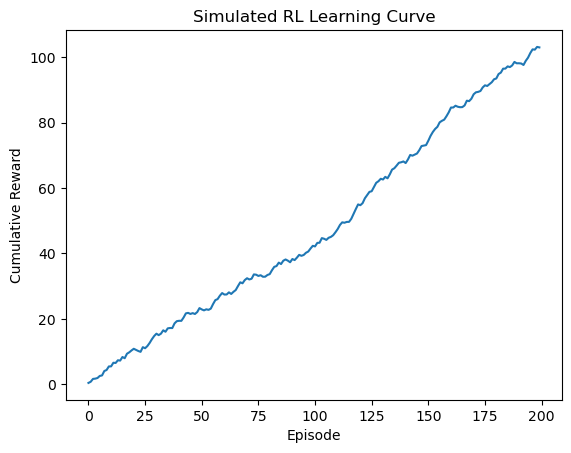

Chapter 6: Classical Extractor Metrics & Meta-RL Extractor#
Welcome to Chapter 5! This notebook guides you through how the first two tabs of the QRANDOPT dashboard work, in simple terms with practical examples.
1. Raw Bits Histogram 📊#
The histogram shows how many 0s and 1s are in your bitstream. A perfectly random stream has about the same count of each.
import numpy as np
import matplotlib.pyplot as plt
# Generate an example bitstream
data = np.random.randint(0, 2, size=1000)
# Plot histogram
plt.hist(data, bins=[-0.5, 0.5, 1.5], edgecolor='black')
plt.xticks([0, 1])
plt.title('Example Raw Bits Histogram')
plt.xlabel('Bit value')
plt.ylabel('Count')
plt.show()

2. Rolling Bias & Entropy 🔄#
As bits stream in, we measure bias (difference from 50/50) and entropy (unpredictability) over a sliding window. Lower bias and higher entropy mean more randomness.
import numpy as np
import pandas as pd
import matplotlib.pyplot as plt
# Simulate a bitstream
bits = np.random.randint(0, 2, size=2000)
window = 100
# Compute rolling bias
rolling_bias = pd.Series(bits).rolling(window).apply(lambda x: abs(x.mean() - 0.5))
# Compute rolling entropy
def sh_entropy(x):
p = x.mean()
return -(p * np.log2(p + 1e-9) + (1 - p) * np.log2(1 - p + 1e-9))
rolling_entropy = pd.Series(bits).rolling(window).apply(sh_entropy)
# Plot
plt.plot(rolling_bias, label='Bias')
plt.plot(rolling_entropy, label='Entropy')
plt.legend()
plt.title('Rolling Bias & Entropy')
plt.xlabel('Index')
plt.ylabel('Value')
plt.show()

3. Classical Extractor Comparison 🧮#
Different methods (Von Neumann, Elias, etc.) process the raw bits to improve randomness. We compare:
Post-Bias: balance after extraction
Extraction Rate: fraction of bits kept
NIST Pass Rate: how many standard randomness tests are passed
import pandas as pd
# Example comparison table
metrics = pd.DataFrame({
'Extractor': ['Von Neumann', 'Elias', 'Universal Hash'],
'Post-Bias': [0.02, 0.05, 0.01],
'Rate': [0.5, 0.8, 0.6],
'NIST PassRate': [0.90, 0.75, 0.95]
}).set_index('Extractor')
metrics
| Post-Bias | Rate | NIST PassRate | |
|---|---|---|---|
| Extractor | |||
| Von Neumann | 0.02 | 0.5 | 0.90 |
| Elias | 0.05 | 0.8 | 0.75 |
| Universal Hash | 0.01 | 0.6 | 0.95 |
4. Meta-RL Extractor 🤖#
A reinforcement-learning agent learns which extractor to apply based on current bias and entropy, maximizing overall randomness.
import numpy as np
import matplotlib.pyplot as plt
# Simulated learning curve
episodes = 200
reward = np.cumsum(np.random.rand(episodes) * 2 - 0.5) # increasing trend
plt.plot(reward)
plt.title('Simulated RL Learning Curve')
plt.xlabel('Episode')
plt.ylabel('Cumulative Reward')
plt.show()

What this means#
Histogram: Check balance of your data.
Bias & Entropy: See stability and randomness quality over time.
Extractor Table: Compare methods to pick the best.
RL Curve: Understand how the AI learns to choose extraction methods.